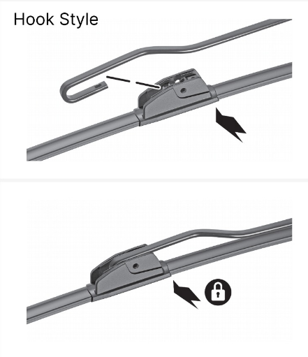
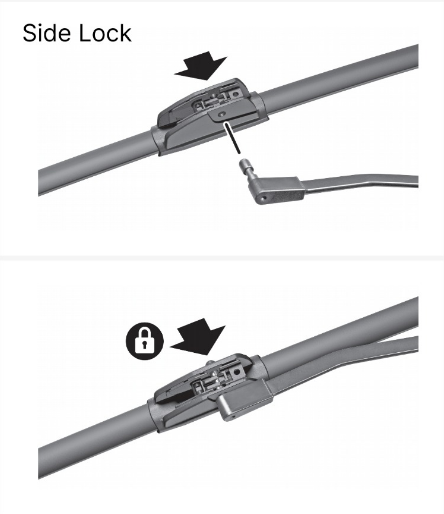

Make sure you're wearing gloves and safety glasses to ensure proper protection from harmful chemicals.
When Should You Replace Your Windshield Wipers?
Steps:
Fig. 1
Fig. 2
Fig. 3
Source: TRICO Global. (2023, November 8). How to Replace Your Windshield Wipers.